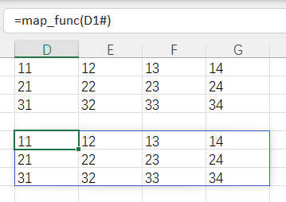

回调函数
可惜没有查到官方文档, 但功能确实是已经实装的
从通用编程概念来看, 有了变量和函数的概念
那么 回调函数 几乎是顺理成章的
所谓回调函数, 直接意思是将函数作为参数传递给主要执行函数使用的一种通用编程设计模式
主要思想就是将主要执行过程中的某一部分逻辑预留给另一块逻辑进行处理
在excel这种面向数据场景下, 回调函数最直接的用法非 迭代器 莫属
迭代器实现
我们可以设计这样一个数组迭代器 map_func
用以遍历传入的数组元素
LAMBDA(array,MAKEARRAY(ROWS(array),COLUMNS(array),LAMBDA(r,c,INDEX(array,r,c))))

这个公式可以将传入的数据一一映射到新的位置
使用到的函数:
MAKEARRAY 函数
INDEX 函数INDEX(array,r,c) // 获取数组对应位置的数据 LAMBDA(r,c, ) // makearray函数的元素处理函数(也是个回调) MAKEARRAY(ROWS(array),COLUMNS(array), ) // 按照输入数组生成同样尺寸的数组 LAMBDA(array, ) // 主lambda
但仅是不做修改的映射应用场景有限, 一般我们都需要在映射的时候做一定的处理
传入一个用于处理的函数
LAMBDA(array,callback,MAKEARRAY(ROWS(array),COLUMNS(array),LAMBDA(r,c,callback(INDEX(array,r,c)))))
加入回调之后,我们可以在调用的同时给出数组元素的映射处理规则
INDEX(array,r,c) // 获取数组对应位置的数据 callback( ) // 调用回调处理当前元素数据 LAMBDA(r,c, ) // makearray函数的元素处理函数(也是个回调) MAKEARRAY(ROWS(array),COLUMNS(array), ) // 按照输入数组生成同样尺寸的数组 LAMBDA(array,callback, ) // 主lambda
显然,通过这个预留了回调接口的函数已经是一个可用的迭代器了
通过这个迭代器,我们可以做出很多衍生处理模块
- map_equals
LAMBDA(array,list,map_func(array,LAMBDA(v,OR(v=list))))
- map_greater
LAMBDA(array,value,map_func(array,LAMBDA(v,v>value)))
- 等等类似的判断模块
事实上原生
MAP 函数已经被实装了
MAP 函数
支持更加灵活的动态参数特性